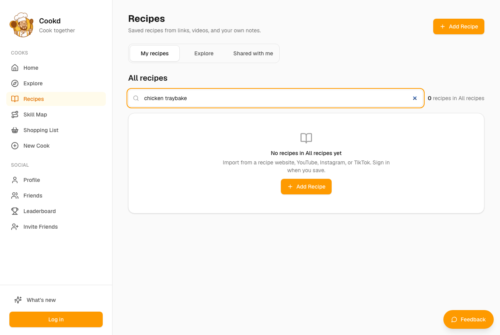

Graham — Literal-minded, low-tech parent looking for a recipe to make tonight
You want a recipe for dinner tonight and you take labels at face value. You're not comfortable with social apps and get impatient when things don't do what their name says.
completedliteral patience 1/53 steps
Debrief
Would not keep using it · score 2/10 — I can't read a single recipe here and the page pushes me to import or sign in. I'll close the tab and find a chicken traybake on a normal recipe website.
| Goal | Outcome | Notes |
|---|---|---|
| Find a recipe for a family dinner, like a chicken traybake, by typing it in a search box | failed | I typed 'chicken traybake' into the search box on the Recipes page and got '0 recipes in All recipes'. There was nothing to find. I closed the tab and would look for a traybake somewhere else. |
| Click on 'Recipes' and see whether I can actually read a recipe there | failed | I clicked 'Recipes' at step 0 and the page was empty: '0 recipes in All recipes' and 'No recipes in All recipes yet'. There was not a single recipe to open or read. |
| Work out whether this is a recipe site or something else, and whether I need to sign up to use it | partial | It seems to be a place where you keep your own recipes, copied in from other websites, and you have to sign in to save them. It is not a site with recipes ready to cook from. I only worked that out from the empty page and the small print about importing and signing in. I never saw a plain statement of it. |
Frictions
- step 0: The 'Recipes' menu item leads to an empty page with '0 recipes in All recipes' and 'No recipes in All recipes yet'.
Expected: A list of recipes I could pick from and cook tonight. · Happened: An empty page, with a message about importing from a recipe website and signing in to save. · Why it matters: I have to make dinner soon. A button called 'Recipes' that shows no recipes feels like a broken promise, and it made me want to leave straight away.
- step 0: The page uses words like 'import' and 'All recipes' that I don't understand in this context, and it mentions signing in before I've been shown anything useful.
Expected: Plain wording that tells me whether I can read recipes here, and no demand for my details up front. · Happened: I was told to import from a website or sign in. I don't know what importing means here, and I don't hand over details to a site that hasn't shown me anything yet. · Why it matters: I don't trust sites that ask me to sign in before they have given me something. This one made me suspicious.
- step 1: The search box says 'Search All recipes' but there is nothing in it to search.
Expected: Typing 'chicken traybake' would bring up chicken traybake recipes I could read. · Happened: The page reloaded with the same '0 recipes in All recipes' message and no results. · Why it matters: A search box that looks usable but can only search my own empty collection wasted one of my two tries. After that I gave up and left.
Missing features
- A set of ready-made recipes anyone can browse and search without signing in — I came here to look up a chicken traybake and cook it tonight. Without ready-made recipes the Recipes page is useless to me.
- A plain sentence on the Recipes page saying what the site is and that the recipes are ones you add yourself — I had to guess that this is a place to keep your own recipes. I'd have known straight away if it said so, and I wouldn't have wasted time searching.
- A search box that says plainly whether it searches the whole site or only my saved recipes — 'Search All recipes' made me think it covered every recipe on the site. It only covers my own empty list.
Liked
- The Recipes page was simple and uncluttered, with no social-media noise.
- The search box was easy to find and worked as a search box should.
Replay — Goal → Action → Expectation → Result → Friction
Step 0 · https://cookd.ca/
Goal: Find a recipe for a family dinner, like a chicken traybake, by typing it in a search box
Thought: Right, no search box that I can see. This is some sort of social thing with people posting their dinners. I want recipes, not people's streaks. The word that might get me to recipes is 'Recipes', so I'll try that.
Action:
click #3Expectation: A page of recipes I can pick from and cook tonight, with a search or at least a list of chicken dishes.
Result: Clicked Recipes. The page loaded, but it's empty: '0 recipes in All recipes', 'No recipes in All recipes yet'. It says I can import from a recipe website, but there's no recipe to show me.
Friction (4/5): The Recipes page is empty and there's a search box that says 'Search All recipes', but there's nothing in All recipes to search. It also says I need to sign in to save. I expected a list of recipes to cook from, and instead I'm being asked to add my own or log in before I get anything.
Step 1 · https://cookd.ca/recipes
Goal: Find a recipe for a family dinner, like a chicken traybake, by typing it in a search box
Thought: Empty. There's a search box but nothing to search through. It wants me to import a recipe from a website or log in. I just want to find a chicken traybake for tonight, not set up an account. I'll try the search box once with 'chicken traybake' to see if it searches anything at all, and if not I'm out.
Action:
type #17 “chicken traybake”Expectation: Some chicken traybake recipes come up that I can read and cook from.
Result: Typed 'chicken traybake' into the search box and pressed enter. The page reloaded with the same empty message: '0 recipes in All recipes', 'No recipes in All recipes yet'. Nothing came up.
Friction (4/5): The search box says 'Search All recipes', but there's nothing in All recipes to search, so it finds nothing. The only way to get a recipe in is to import one from a website or sign in. I wanted a chicken traybake I could read and cook from tonight, and I've got nothing to cook from.

Step 2 · https://cookd.ca/recipes?query=chicken+traybake
Goal: Find a recipe for a family dinner, like a chicken traybake, by typing it in a search box
Thought: Well that's that. Searched for a chicken traybake and it's got nothing. It's not a recipe site, it's a place for people to post their dinners and save recipes once I've signed in. I'm not signing up or handing over details just to get dinner sorted. I'll go and find something in one of my cookbooks.
Action:
finishExpectation: I'd close the tab and go and find a chicken traybake somewhere else.
Result:
